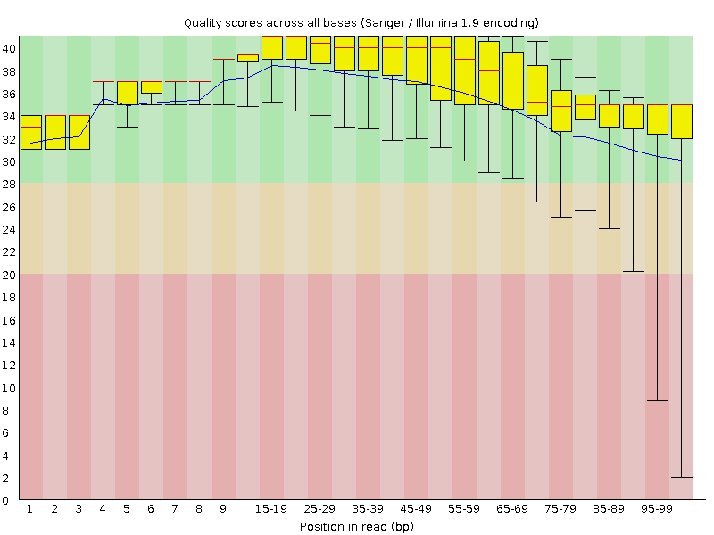
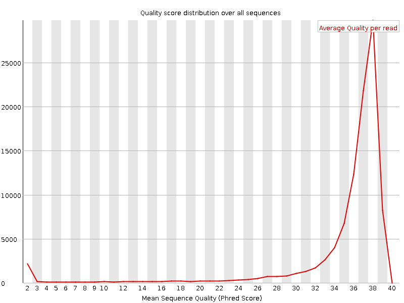
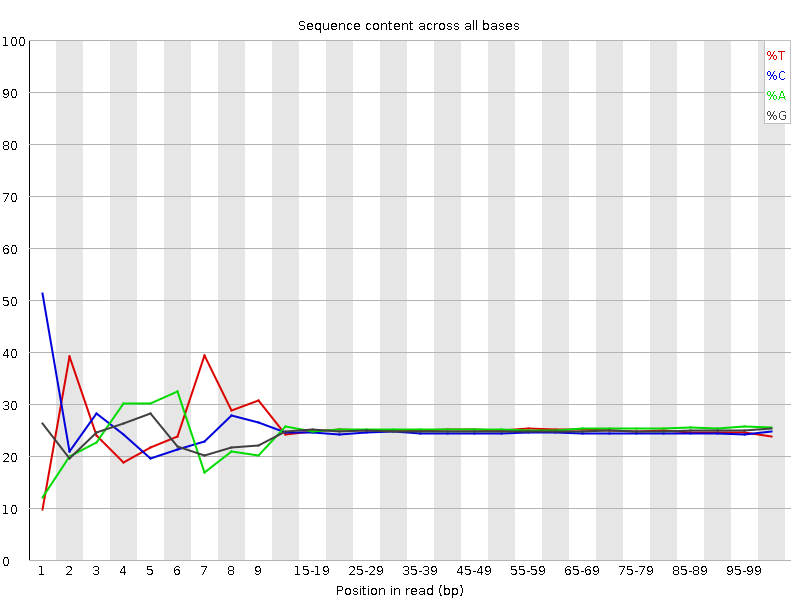
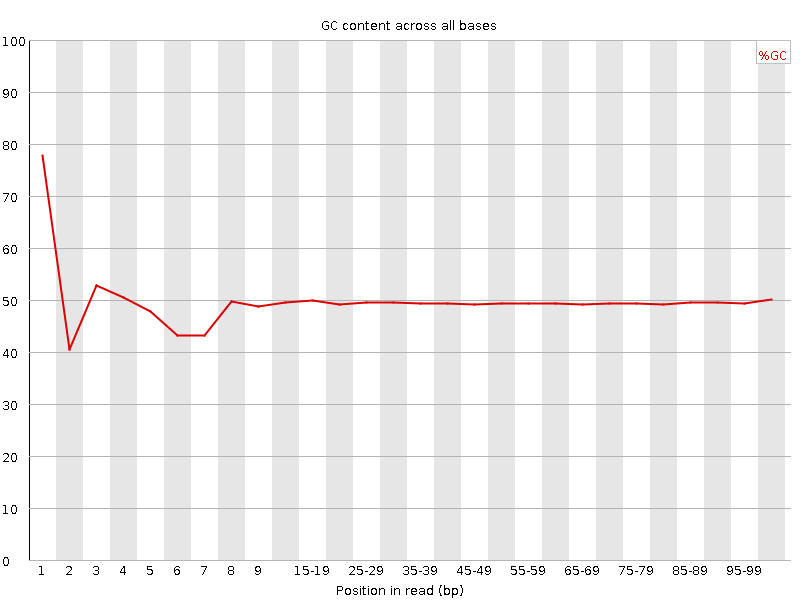
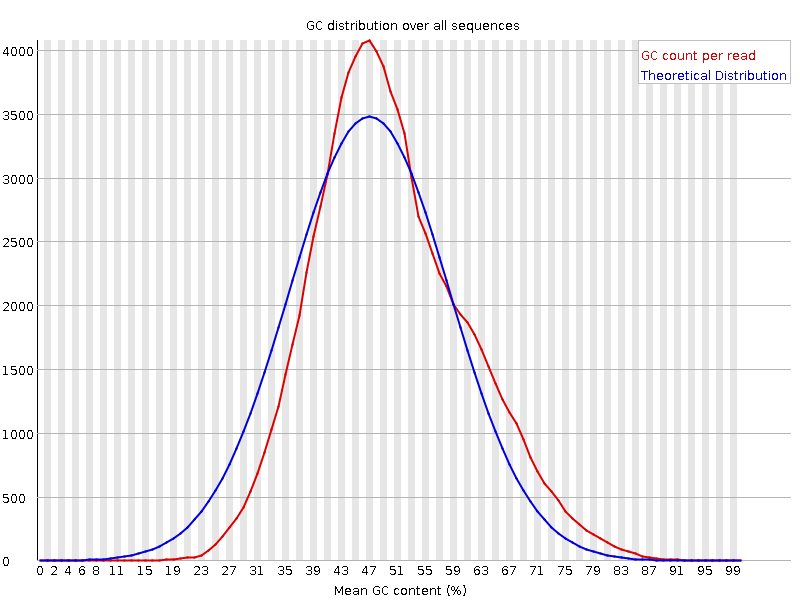
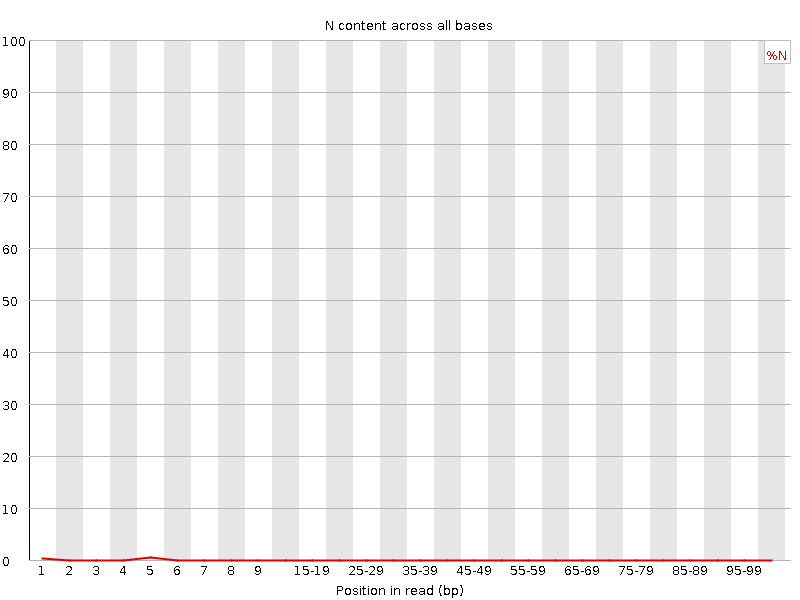
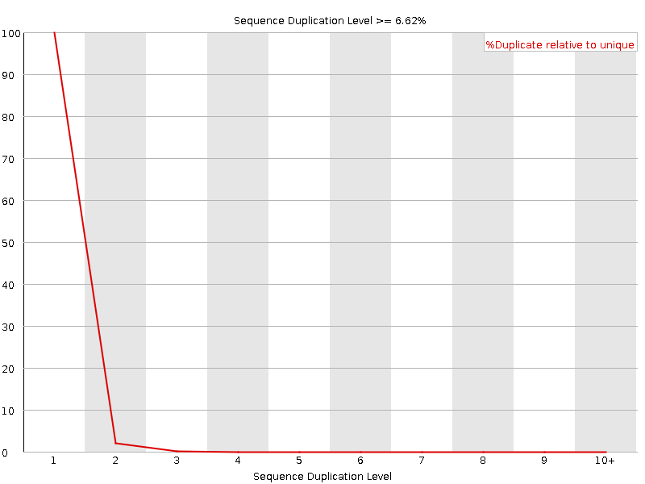
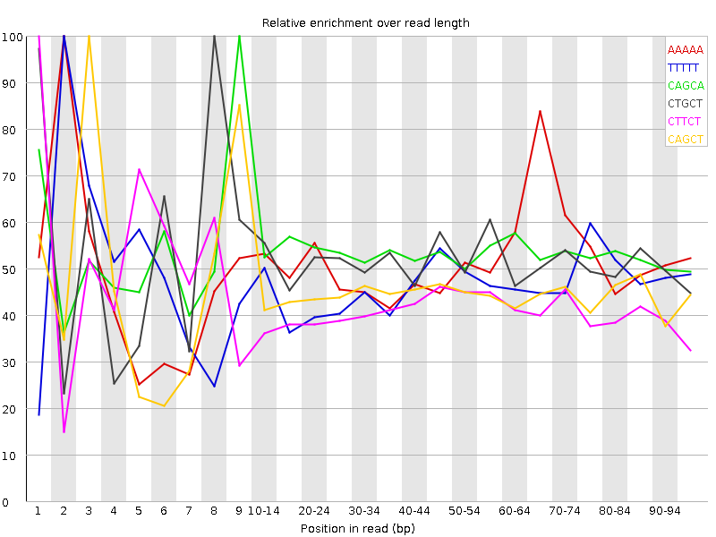

![[OK]](Icons/tick.png) Basic Statistics
Basic Statistics
| Measure | Value |
|---|---|
| Filename | female_repl1_R1.fq.gz |
| File type | Conventional base calls |
| Encoding | Sanger / Illumina 1.9 |
| Total Sequences | 100000 |
| Filtered Sequences | 0 |
| Sequence length | 100 |
| %GC | 49 |
Per base sequence quality

Per sequence quality scores

![[FAIL]](Icons/error.png) Per base sequence content
Per base sequence content

Per base GC content

![[WARN]](Icons/warning.png) Per sequence GC content
Per sequence GC content

Per base N content

Sequence Length Distribution

Sequence Duplication Levels

Overrepresented sequences
| Sequence | Count | Percentage | Possible Source |
|---|---|---|---|
| GATCGGAAGAGCACACGTCTGAACTCCAGTCACCAGATCATCTCGTATGC | 224 | 0.22399999999999998 | TruSeq Adapter, Index 7 (100% over 50bp) |
Kmer Content

| Sequence | Count | Obs/Exp Overall | Obs/Exp Max | Max Obs/Exp Position |
|---|---|---|---|---|
| AAAAA | 31715 | 3.262631 | 6.315858 | 2 |
| TTTTT | 29055 | 3.0693777 | 6.5367937 | 2 |
| CAGCA | 26935 | 2.8790388 | 5.388377 | 9 |
| CTGCT | 24635 | 2.6612985 | 5.136234 | 8 |
| CTTCT | 24065 | 2.5877907 | 6.1770563 | 1 |
| CAGCT | 22925 | 2.4634578 | 5.5063906 | 3 |
| TCTTC | 22825 | 2.4544497 | 5.2185593 | 7 |
| TTCTT | 22775 | 2.4274192 | 5.479691 | 6 |
| AGAAG | 22970 | 2.4102952 | 5.0219207 | 3 |
| CTGCA | 21960 | 2.3597617 | 5.8095856 | 1 |
| CTTCA | 21495 | 2.2991934 | 6.867221 | 1 |
| CTCCT | 20990 | 2.2772603 | 8.274631 | 1 |
| CTCCA | 19990 | 2.1572862 | 7.6056986 | 1 |
| TCCAG | 18920 | 2.0330915 | 5.0083365 | 7 |
| CTGAA | 18930 | 2.0055072 | 7.5176525 | 1 |
| TCTGC | 18450 | 1.9931382 | 5.086898 | 7 |
| CTGGA | 17880 | 1.9131286 | 7.799108 | 1 |
| CTTTT | 17565 | 1.8721237 | 7.820262 | 1 |
| CTCTG | 16965 | 1.832715 | 5.9448 | 1 |
| CTTTG | 17025 | 1.8229353 | 7.029337 | 1 |
| CTGGG | 15510 | 1.6760672 | 6.2075167 | 1 |
| CTCAG | 15000 | 1.6118591 | 8.506893 | 1 |
| CTGAG | 14290 | 1.5290049 | 5.319921 | 1 |
| GTTTT | 14095 | 1.4958647 | 5.7376833 | 1 |
| CTTTC | 13895 | 1.4941764 | 5.1388955 | 1 |
| GGATG | 13750 | 1.464941 | 5.25343 | 4 |
| CTCCC | 13350 | 1.4612967 | 5.8650455 | 1 |
| ATGCA | 11170 | 1.1833872 | 5.141395 | 6 |
| CTCAT | 11020 | 1.1787444 | 5.111691 | 1 |
| GATGC | 10245 | 1.0961971 | 5.120793 | 5 |
| CTCAA | 10005 | 1.0645103 | 5.392789 | 1 |
| CTTTA | 9670 | 1.0251976 | 5.680616 | 1 |